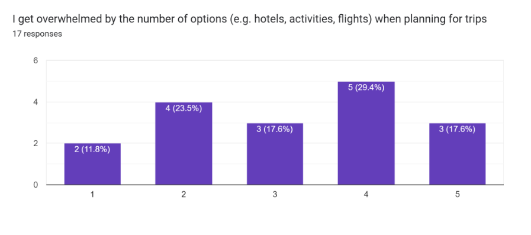
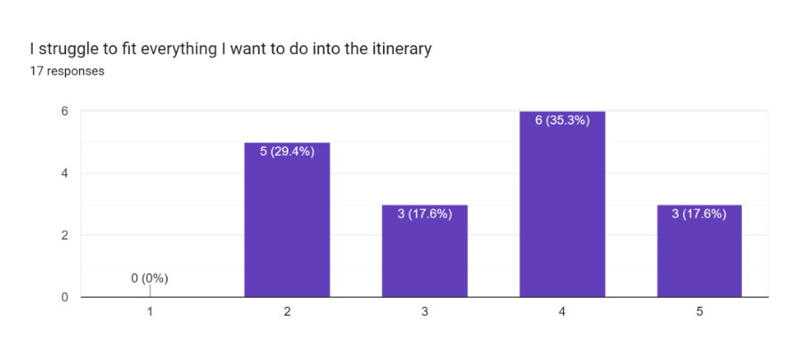
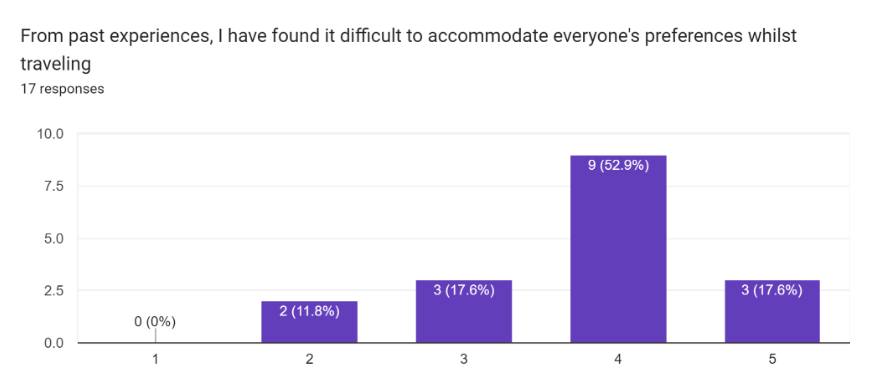

Research
The first step of the design process was to gather some data from our target users.
The research objective I developed was to discover the pain points users experience when planning travel overseas.
I utilised both qualitative and quantitative methods in gathering data. The summary of my user research is displayed below.
The research objective I developed was to discover the pain points users experience when planning travel overseas.
I utilised both qualitative and quantitative methods in gathering data. The summary of my user research is displayed below.
Interviews
I conducted 5 one-to-one interviews with users who have all traveled within the past year.
I collated the data onto sticky notes, and then categorized the data through an affinity diagram to have a better understanding of my target users.
I collated the data onto sticky notes, and then categorized the data through an affinity diagram to have a better understanding of my target users.

Surveys
I also conducted a survey which was completed by 17 participants, with all users having traveled overseas previously.
Some of the key findings are displayed on the graphs below (horizontal scale from 1 to 5 represents Strongly Disagree (1) to Strongly Agree (5)).
Some of the key findings are displayed on the graphs below (horizontal scale from 1 to 5 represents Strongly Disagree (1) to Strongly Agree (5)).

8 out of 17 respondents (47%) report they feel overwhelmed by the number of options when planning for trips.

9 out of 17 respondents (53%) report they struggle to fit everything they want to do in their itinerary.

12 out of 17 respondents (71%) report they have found it difficult to accomodate to everyone's preferences whilst traveling